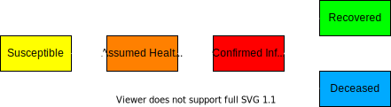

Covid-19 SAIRD Epidemic Simulation
Dan Filler | Version 0.1
Disclaimer: I am a programmer, not a medical doctor. I made this after reading a few papers from
the Network Science and Datamining community, particularly this
paper. This work is for entertainment and educational purposes only and I do not claim scientific or medical accuracy.
This webpage provides a visualization of my variant of the Susceptible-Infectious-Recovered-Deceased
(SIRD) model. SIRD (and many related versions) is a simple compartmental model of epidemic spread. Models like these allow us to predict the spread and danger of a disease based off a few parameters. The canonical parameters are:
- Initial Infection Size (I0): The starting number of people infected
- Contact Rate: The average number of other people contacted in a timestep by each individual
- Infection Probability (pI): The probability of contracting disease after contact with an infected individual
- Recovery Probability (pR): The probability of recover once infected*
- Mortality Probability (pM): The probability of death once infected*
- Assumed Healthy Contact Rate (AHCR): Contact rate for those who assume they are healthy**
- Confirmed Infectious Contact Rate (CCR): Contact rate after showing symptoms or receiving a positive test**
- Symptomatic Offset Time (To): The number of timesteps that an infected individual takes to show symptoms. For covid this has been reported as 1-2 weeks.
- Contagious Time (Tc): The number of timesteps an individual is contagious for after being infected. I have this set at 3 weeks (2 weeks asymptomatic, 1 week symptomatic).
- Susceptible (S)
- Assumed Healthy but Infected (A)
- Confirmed Infected (I)
- Recovered (R)
- Deceased (D)
* Recovery + Mortality rates must sum to 1 because everyone infected person either dies or recovers.
** The assumed rate should be higher than the confirmed rate, once a person knows they are sick, their contact rate should be nearly zero.
*** S + A + I + R + D = N, in other words, N is the total number of people in the population
With these parameters, we can now build our model. The model predicts infections and deaths by using the parameters to define tranisition rate functions. Each timestep, the transition rate functions are used to calculate how many new infections, recoveries, and deaths there are. The transition rate functions are defined as:
- Newly infected: AHCR * pI * A + CCR * pI * I
All newly infected individuals are put in the A compartment for To timestamps then they are moved to the I compartment. - Newly recovered: pR * I
Infected individuals may recover. After Tc timestamps from the time of infection, these individuals stop being contagious. Recovered individuals are assumed to be immune to the disease (unknown if this is true in general for Covid). - Newly deceased: pM * I
Infected individuals may also die, these individuals are removed from the population. I have assumed that death happens after Tc timestamps.
The flowchart below shows how an individual can progress through the compartments: 
Use the sliders below to set each parameter. When you are done, click the run button to watch the simulation at work. Each individual is represented by a dot. Individuals who are in contact during a given time stamp are connected with a line. A green line means the contact did NOT transmit the disease, while a red line means the contact DID transmit the disease. As the individuals move from compartment to compartment each timestamp, their color will change corresponding to their condition.
Mortality Probability: